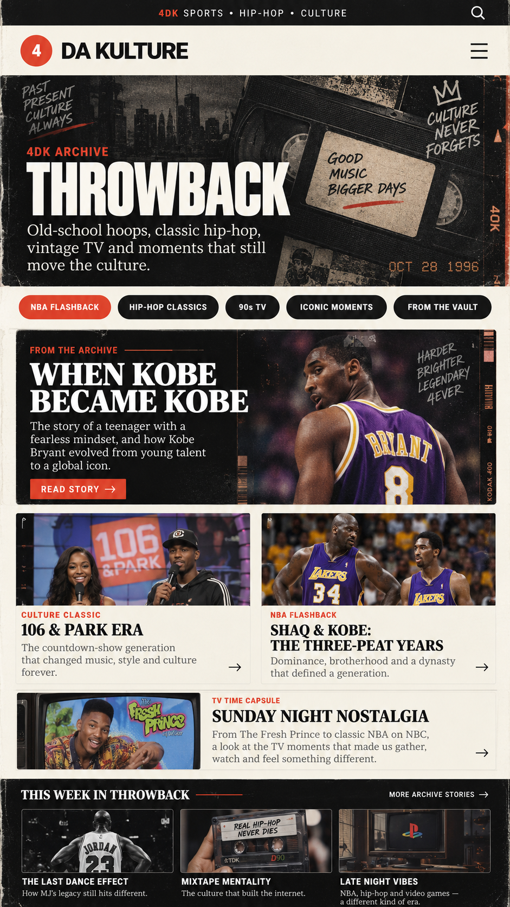
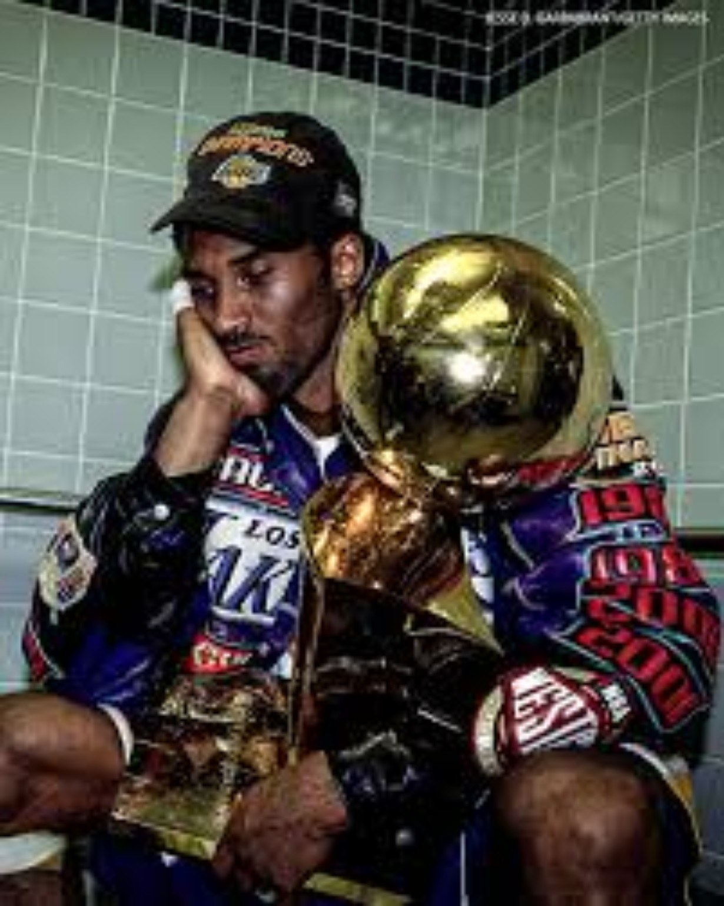
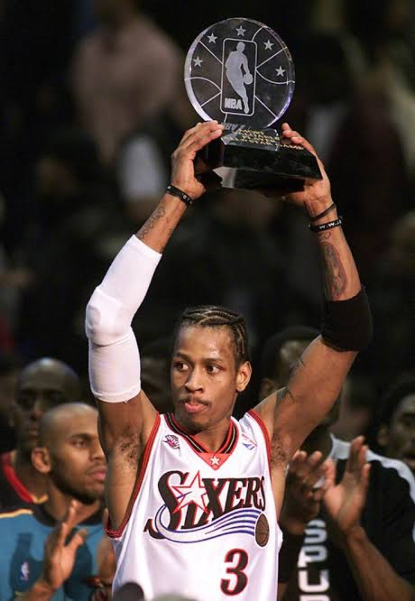
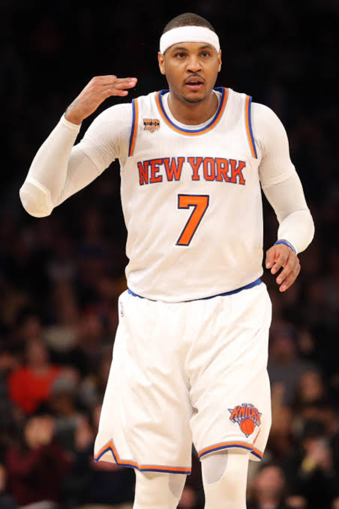
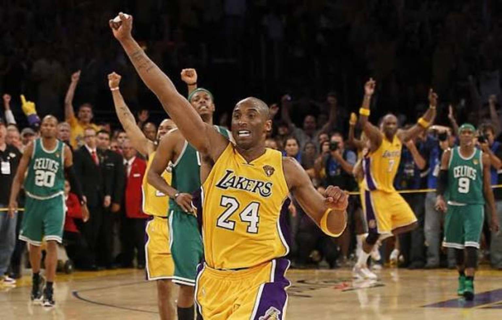
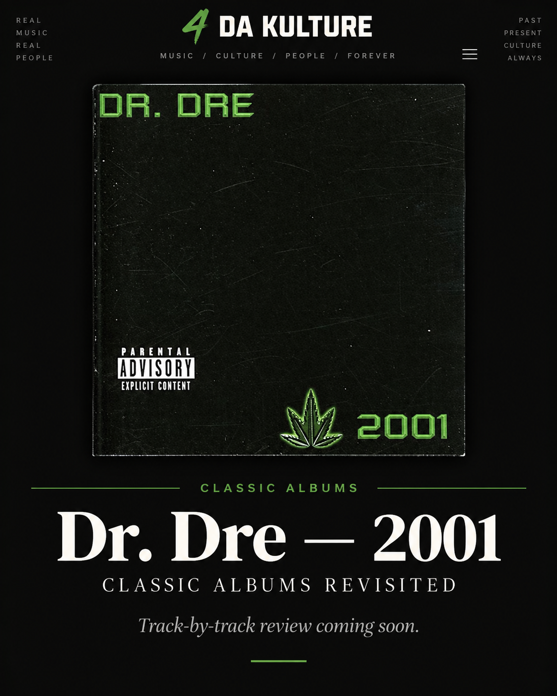
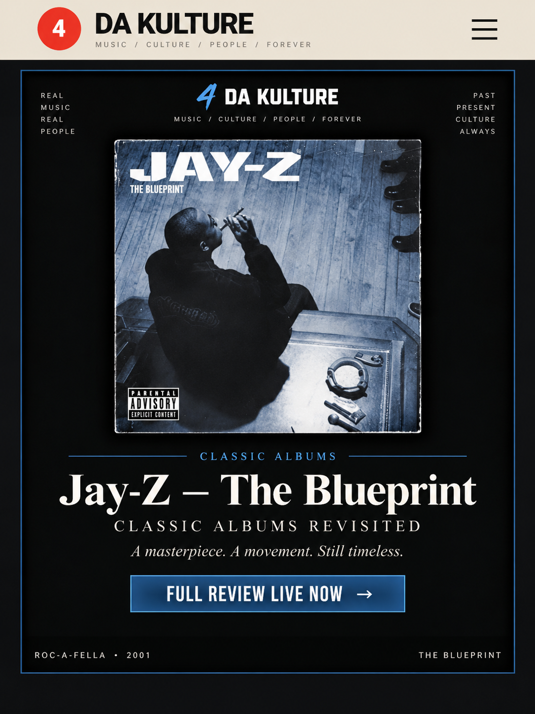
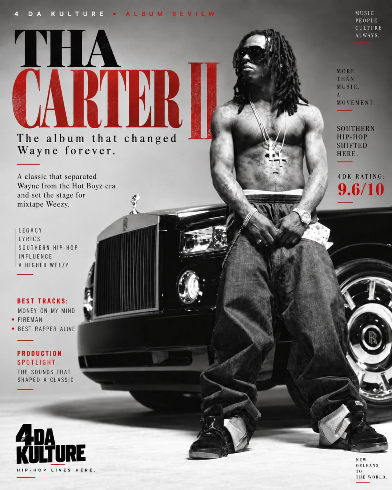
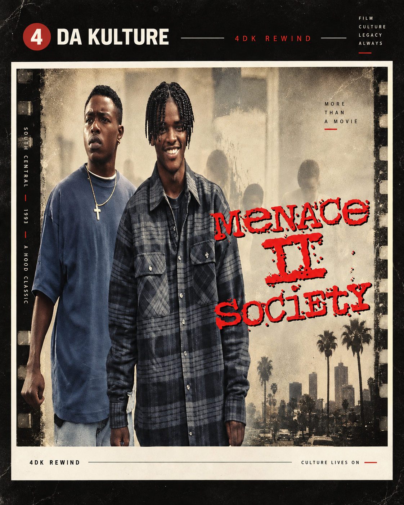

THE DIGITAL
MUSEUM.
Throwback is not where old stories go to die. It is where the culture gets put back in context.
Classic seasons. Dynasty years. Draft nights. MVP runs. Albums that changed rap. Movies that became language. Players the internet remembers wrong. Eras that still shape the arguments we have now.
Everything here is organized by era, series and story — so the archive feels like something you can actually explore.
CONNECTED TO THE ARCHIVE
START HERE.
One major story leads the museum. Everything underneath it opens another door into the archive.

2000 • MAMBA FILES SPECIALWhen Kobe Became Kobe
Game 4 in Indiana. The first ring. The night the conversation shifted from potential to proof.
READ THE FEATURE →
2001 • THE ANSWER FILESIt Was His Time.
Iverson’s MVP season, the Sixers’ run and the year the league had to move around him.

2012–13 • ME7O FILESKing of New York.
Melo’s scoring title, 54 wins and the last great Knicks season before the drought.

2010 • MAMBA FILESNo. 5 Had To Go Through Boston.
The Game 7 fight, the fifth ring and why the ugliest win of the run meant so much.
PICK A TIME.
OPEN THE FILE.
Sports and hip-hop belong on the same timeline. Browse the archive by the years that shaped the culture.
Kobe at 13. Iverson at 1. Nash, Ray, Marbury and a class that changed the league.
GEORGETOWN • AIBefore The AnswerBefore Philadelphia, before the sleeve, before the MVP — Iverson became a phenomenon in college.
1999 • VICK FILESVirginia Tech Michael VickThe arm, the speed and the college version that made the future of quarterback play feel different.
Game 4 in Indiana and the first championship proof.
2001 • NBAIverson: It Was His TimeThe MVP, the Finals run and the season that became his defining peak.
2001 • HIP-HOPThe BlueprintJay-Z, soul samples and one of the defining rap albums of the century.
2003 • COLLEGEOne Year. One Title.Melo’s Syracuse season went from freshman hype to championship history.
Jeezy’s voice, ad-libs and motivational trap language turned an album into a movement.
2005–06 • NBAThe Season Kobe Broke The Scale35.4 a night, 81 points and a scoring season that still feels unreal.
2005 • HIP-HOPTha Carter IIThe album at the center of Wayne’s rise from star to best-rapper-alive conversation.
2008–09 • NBAThe Job Wasn’t FinishedKobe, Pau, Denver, Orlando and the title that validated the post-Shaq era.
2009 • NBAThe Closest Melo GotDenver’s conference-finals run and the version of Melo that came closest to the Finals.
The fifth ring had to come through the rival that denied Kobe two years earlier.
2011–17 • NBAThe New York YearsMelo returned home to become the face of Madison Square Garden.
2012–13 • NBAKing of New YorkThe scoring title, 54 wins and Melo at the center of the basketball world in New York.
How the league changed around one of the defining scorers of the previous generation.
USA BASKETBALLOlympic MeloThe international version of Carmelo became its own basketball identity.
LATE 2010sThe FallHouston, the league’s changing priorities and the moment a Hall of Famer was nearly pushed out.
Portland, acceptance, adjustment and the second life of Carmelo Anthony’s career.
ME7O FILESThe LegacyWhat survives after the arguments about rings, style and era finally cool down.
THE ANSWER FILESIverson Is The KultureThe influence went far beyond points and playoff runs. The league still looks like AI helped shape it.
THE FRANCHISES.
These are permanent homes — not one-off articles. Open a file and keep going.
FILES
Kobe’s career, season by season, turning point by turning point.
ENTER THE SERIES → 06 FILESTHE ANSWERFILES
Iverson before Philly, his rise, his peak and the culture he changed.
ENTER THE SERIES → 11 FILESME7OFILES
Syracuse to Denver to New York, the fall, comeback and legacy.
ENTER THE SERIES → VOLUME 001VICKFILES
The electric quarterback story starts at Virginia Tech.
ENTER THE SERIES → MUSIC ARCHIVECLASSICALBUMS
Track by track. Best beat. Best verse. Legacy. No nostalgia pass.
ENTER THE SERIES → SCREEN ARCHIVE4DKREWIND
Classic movies and television with context, soundtracks and legacy.
ENTER THE SERIES →THE MUSIC SHELF.
Four live deep dives now give the Throwback archive a real hip-hop spine.

Dr. Dre — 2001
West Coast cinema, elite production and a record that still sounds expensive.
READ →
Jay-Z — The Blueprint
Twenty-five years later, the soul samples and bars still define an era.
READ →Jeezy — TM101
The voice, ad-libs and motivational trap language that made an album feel like a movement.
READ →
Lil Wayne — Tha Carter II
The album where Wayne’s climb toward the top became impossible to ignore.
READ →AI.
SHAQ + KOBE.
THE BLUEPRINT.
This is the idea behind the new Throwback section in one year: sports and hip-hop on the same cultural timeline.

NO
NOSTALGIA
PASS.
Rewind is the screen wing of the museum: performances, soundtracks, setting, what the work was saying, how it aged and why the culture kept it alive.
ENTER 4DK REWIND →